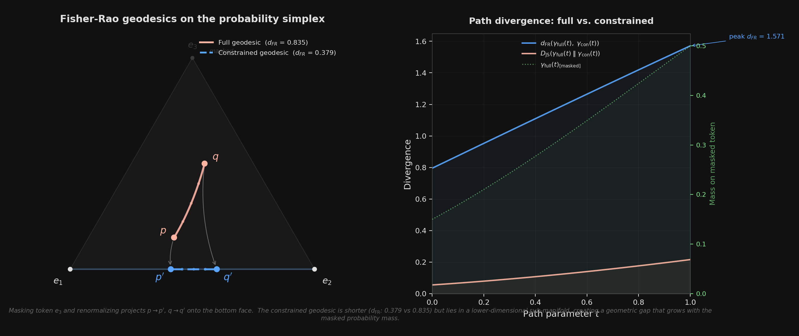

You're building an agent. Your LLM needs to call a tool, which means emitting valid JSON. The obvious move: at each decoding step, mask out every token that would produce invalid syntax, renormalize, sample. Guaranteed valid output, zero parsing errors. Ship it.
Except the model gets worse. Not just slower—measurably less accurate. On math-reasoning benchmarks, constrained decoding can drop a 1B model's accuracy from 39% to 15%. The JSON is always well-formed. The answers inside it are wrong more often. Something about forcing the syntax is corrupting the semantics.
I've been trying to understand why, and the cleanest explanation I've found is geometric. It lives on the probability simplex, the space where next-token distributions exist. The picture is simple enough to draw on a napkin, but it explains a surprising amount—including why fine-tuning and constrained decoding are super-additive when combined.
Where distributions live
Every time a language model is about to pick a token, it produces a probability distribution over its vocabulary. If the vocabulary has V tokens, this distribution is a point on the probability simplex—the set of all vectors whose entries are non-negative and sum to 1. For V = 3, the simplex is a triangle. For V = 150,000, it's a 149,999-dimensional analog. The corners are the distributions that put all probability on a single token. The center is uniform randomness. Every possible next-token prediction lives somewhere on this surface.
Now, what's the "natural distance" between two distributions on this simplex? There are many choices, but one stands out: the Fisher-Rao metric. It measures how distinguishable two distributions are, weighted by how much probability they assign to each outcome. It's the unique metric (up to scale) that respects the statistical structure of the problem. And it has a beautiful geometric interpretation.
Map each distribution p to the point √p—take the square root of each component. This sends the simplex onto the positive orthant of a unit sphere. Under this mapping, the Fisher-Rao distance between two distributions is twice the angle between their images on the sphere. The "shortest path" between distributions—the Fisher-Rao geodesic—is a great circle arc. The model's natural trajectory through distribution-space, at each step of generation, traces out these arcs.
What masking does to the geodesic
Constrained decoding masks some set of tokens at each step. Geometrically, this projects the distribution onto a face of the simplex—the lower-dimensional sub-simplex where the masked tokens have probability zero. If you mask one token out of three, you collapse from a triangle to an edge. If you mask half the vocabulary, you collapse from a 150,000-dimensional simplex to a 75,000-dimensional one.
The projection is simple: zero out the masked tokens, renormalize. But here's the critical point. The geodesic on the face is not the projection of the geodesic on the full simplex. They are different curves. The great circle on the full sphere and the great circle on the lower-dimensional sub-sphere follow different paths, even if they start and end at related points.

Left: the full Fisher-Rao geodesic (solid) curves through the interior of the 3-simplex, while the constrained geodesic (dashed) is confined to the bottom face after masking vertex e3. Projection arrows show the renormalization step. Right: the divergence between the two paths grows as the full geodesic passes through regions where the masked token carries significant probability mass.
The figure shows a toy case: three tokens, one masked. The start distribution p = (0.50, 0.35, 0.15) gets projected to p' = (0.59, 0.41, 0), and the target q = (0.20, 0.30, 0.50) becomes q' = (0.40, 0.60, 0). The full geodesic has Fisher-Rao length 0.835. The constrained geodesic has length 0.379—only 45% as long. The model, operating on the constrained face, "thinks" the start and target are much closer together than they actually are. It has lost the dimension where most of the real movement was happening.
The detour gets worse exactly when it matters
The severity of this geometric distortion depends on a single quantity: Z, the feasible mass—the total probability the model originally assigned to valid (unmasked) tokens. When Z is close to 1, the model was already going to pick a valid token. The projection barely moves anything, the constrained face nearly coincides with the relevant part of the full simplex, and the geodesics are almost identical. The constraint is geometrically invisible.
When Z is small—say the model puts 90% of its mass on tokens that the grammar forbids—the projection is violent. You're collapsing the distribution onto a thin sliver of the simplex, and the geodesic on that sliver bears little resemblance to the original. The right panel of the figure shows this: the divergence between the two paths peaks exactly where the full geodesic allocates the most mass to the masked token. The constraint hurts most precisely when the model most "wanted" to say something invalid.
And there's a phase transition. As Z decreases, the distortion doesn't grow smoothly. There's a critical value Zc below which the projected endpoint—the place the constrained geodesic arrives—jumps discontinuously away from where the full geodesic was heading. Above Zc, constraint is a mild perturbation. Below it, the model is effectively navigating a different problem. In a toy mean-field model with autoregressive feedback (each bad token making the next one worse), this shows up as a fold bifurcation: two stable states, one healthy and one degraded, with a sharp cliff between them.
This matches the empirical picture. Constrained decoding works fine for tasks where the model already wants to output something close to the target format—where Z is naturally high. It fails for tasks where the model needs to reason freely and then express the result in a rigid structure. The model's natural reasoning geodesic passes through regions of the simplex where structural tokens (brackets, colons, quotes) carry very little mass. The constraint forces it onto a face where those tokens dominate, and the geometric detour cascades through the KV cache into every subsequent token.
Why fine-tune plus constrain is the right answer
This geometric picture makes the solution obvious. You don't want to remove constraints—you need valid JSON. You want to make the constraints cheap. And a constraint is cheap when Z is high: when the model already puts most of its probability on valid tokens, so the projection barely moves the distribution, and the constrained geodesic nearly overlaps the full one.
That's exactly what fine-tuning does. When you LoRA-train a model on tool-call examples, you're reshaping its probability landscape so that at the positions where JSON syntax matters, the valid tokens already carry high mass. You're not just teaching the model a format. You're moving its natural geodesics closer to the constrained face—aligning the geometry so that the projection has almost nothing to do.
Fine-tuning raises Z. High Z means the constrained face is close to the full simplex. Close means the geodesic detour is small. Small detour means the model's reasoning survives the constraint intact. This is why fine-tune + constrain is super-additive: fine-tuning doesn't just help on its own—it makes the constraint nearly free, turning a destructive intervention into a harmless formatting pass.
The practical hierarchy, then, is clear. Constrained decoding alone guarantees valid syntax but pays a geometric tax that scales with how far the model's natural distribution is from the constraint surface. Fine-tuning alone produces mostly-valid output but can't guarantee it. The combination gives you both: the model's geodesics already hug the constrained face, so masking the remaining invalid tokens is a negligible perturbation. Guaranteed validity, intact reasoning.
What I find satisfying about this is that it's not a vague analogy. The probability simplex is the literal space where next-token prediction happens. The Fisher-Rao metric is the natural geometry of that space. The geodesic distortion from masking is a computable quantity. The 45% length ratio in the three-token example isn't a metaphor for quality loss—it's a measurement of how much the model's information-geometric trajectory has been warped. The geometry doesn't just explain the phenomenon. It is the phenomenon.
Code and figure: workspace/constrained-decoding-dynamics. The geodesic computation uses the square-root (Bhattacharyya) embedding and spherical interpolation (SLERP). The phase transition analysis uses a mean-field model with autoregressive feedback.